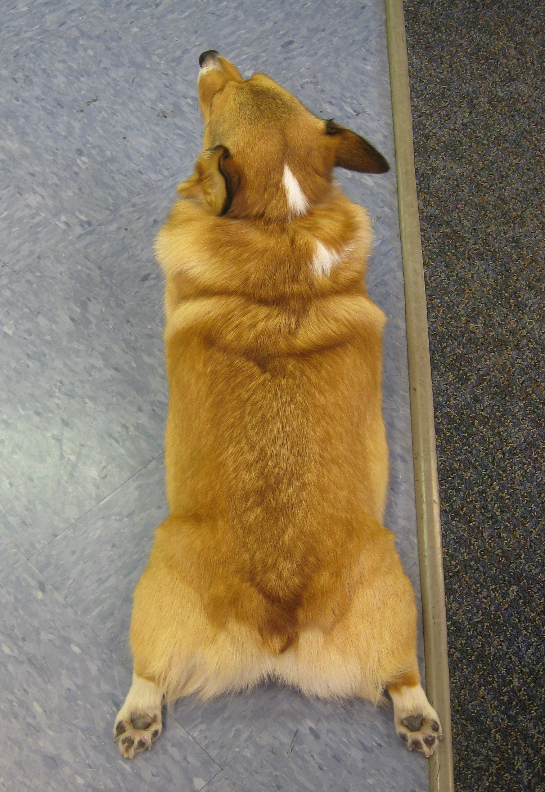
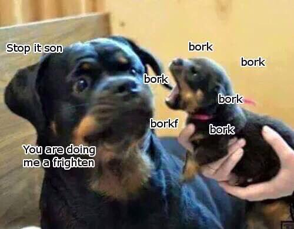
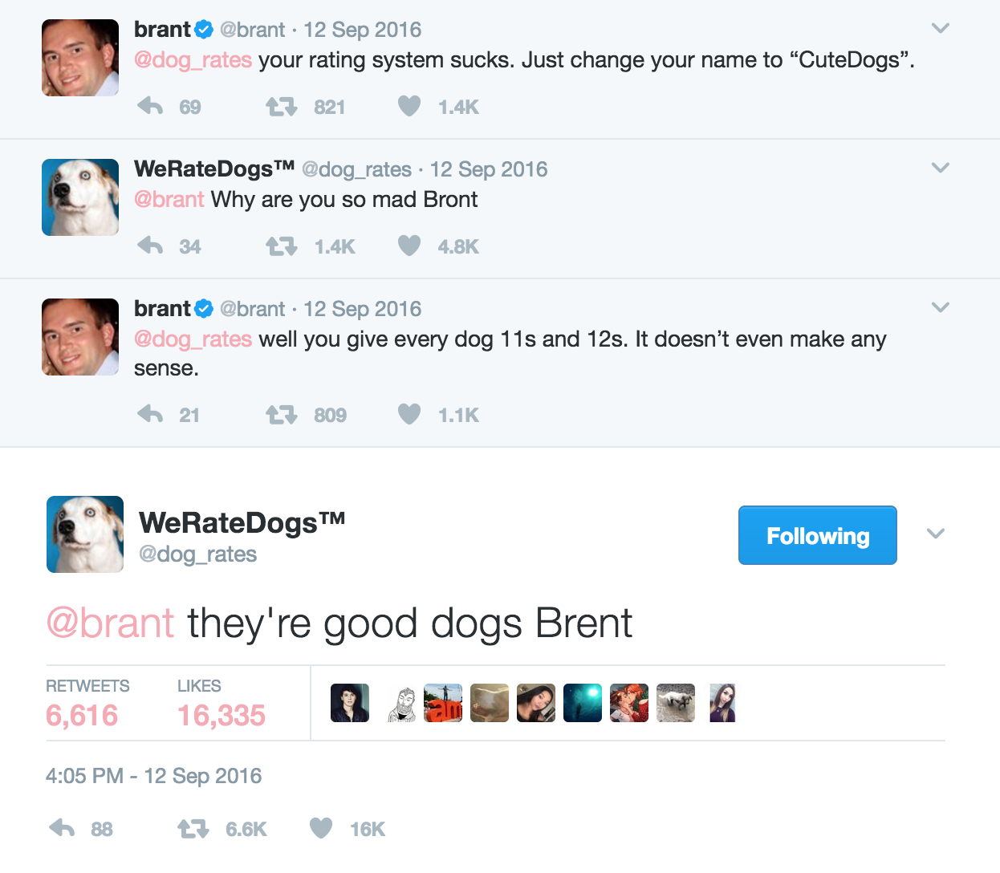

Doggo Lingo is an Internet language trend inspired by a shared love of dogs. Before its advent, when a dog or puppy was being extremely cute or funny, there weren't enough words to describe it. Thus, the Internet created words like doggo, pupper, floof, sploot, boof, bork and much more. These cutesy words appeared in memes and posts and soon the language expanded to include meme phrases that described dog memes.
| Word | What it is |
|---|---|
| Doggo/doge/woofer/boofer | A dog |
| Pupper/pupperino | A puppy |
| Floof/fluffer | A very fluffy doggo/pupper |
| Cloud | A doggo/pupper with a fluffy white coat, much like a cloud |
| Corgo | A corgi |
| Shibe | A shiba inu |
| Smol | Small |
| Loaf | A word used to describe a round dog that look like a loaf of bread |
| Bork | A bark; popularized by Gabe the Dog covers |
| Gabe the Dog / Bork Remixes | A series of videos of various music dubbed over by the deathtrip's miniature American Eskimo/Pomeranian dog named Gabe who passed early 2017; RIP sweet Gabe (Click to see) |
| Boof | A huffy sound that's not quite a bark or a sneeze, usually made when a doggo is alert (Click to see)
|
| Mlem | A sound used to describe a dog licking its nose |
| Sploot | When a dog lays down on its belly and has its hind legs spread wide behind (Click to see)
 "Mika's 'tocks" by Klara on flickr.com, used under CC BY-NC-SA 2.0 |
| Doing me a frighten | A phrase used to caption pictures of startled dogs (Click to see)
 "Stop son, you are doing me the frighten" meme |
| they're good dogs, Brent. | A quote from @dog_rates, a dog-rating Twitter, in response to another user questioning their rating system. More here. (Click to see)
 |